NOTE: Keep the final write-up under 1000 words (excluding code blocks/captions if you want to be safe). :contentReference[oaicite:1]{index=1}
1. Overview
This lab introduces the SparkFun RedBoard Artemis Nano and establishes a basic
Bluetooth Low Energy (BLE) communication pipeline between the Artemis board and a
host computer. In Lab 1A, the Arduino development environment was set up and basic
Artemis programming tasks were completed to verify correct board configuration and
serial communication. In Lab 1B, a BLE-based communication framework was implemented,
allowing a laptop (Python/Jupyter) to act as a central device and exchange commands
and data with the Artemis board acting as a peripheral. This framework forms the
foundation for reliable data transmission and command-based interaction used in
subsequent labs.
Hardware / Software
Board: SparkFun RedBoard Artemis Nano
IDE: Arduino IDE
Python: venv + JupyterLab + bleak (BLE)
2. Prelab
2.1 Blink
2.2 Serial
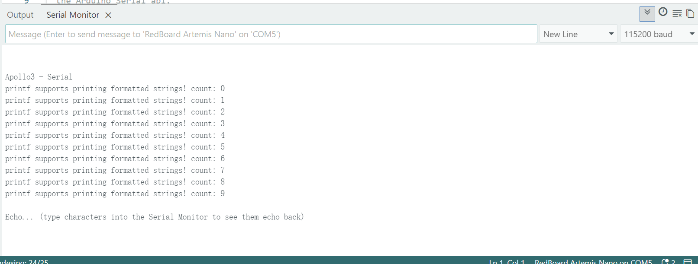
2.3 AnalogRead
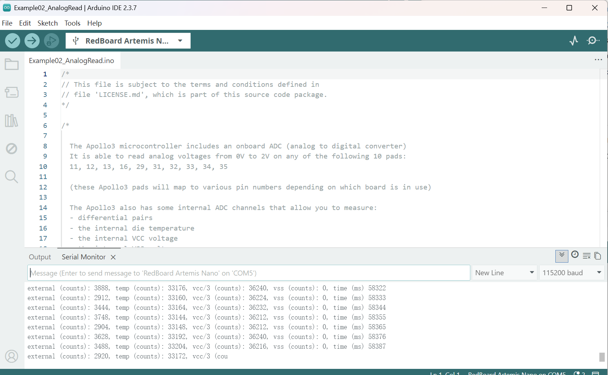
2.4 MircrophoneOut
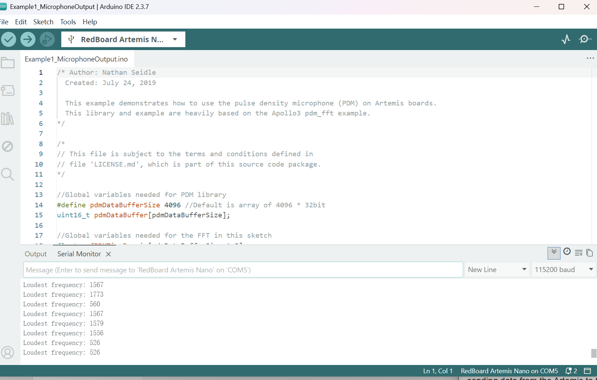
3. Lab Tasks
Below follows tasks 1–8 required by the Lab 1B handout. For each task:
explain what you changed, show evidence (screenshot/video), and include minimal code snippets. :contentReference[oaicite:4]{index=4}
Task 1 — ECHO string (PC → Artemis → PC)
Command used:ECHO
Expected behavior: The PC sends a string to the Artemis board, and the Artemis replies with an augmented version of the string.
Implementation (Arduino)
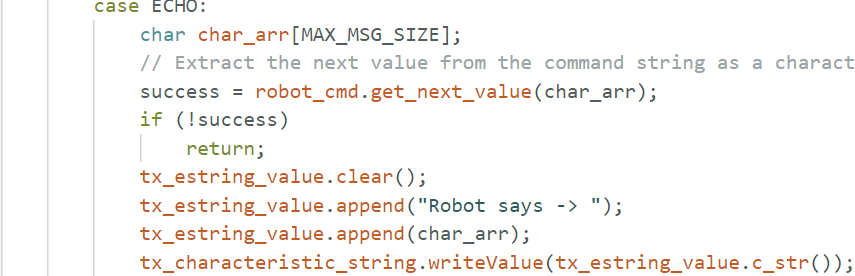
Figure 1: Arduino-side ECHO handling and reply construction.
Evidence (Python/Jupyter)
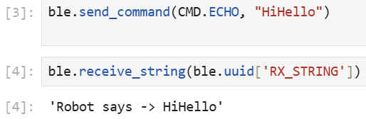
Figure 2: ECHO command sent from the PC and augmented reply received from Artemis.
Task 2 — SEND_THREE_FLOATS (extract 3 floats on Artemis)
Command used:SEND_THREE_FLOATS
Expected behavior: The PC sends three float values, and the Artemis parses and prints/returns the extracted floats.
Implementation (Arduino)
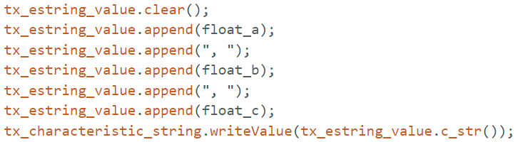
Figure 3: Arduino-side parsing of three floats using RobotCommand/EString.
Evidence (Python/Jupyter)
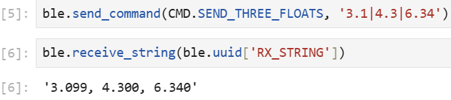
Figure 4: Sending three floats from the PC and confirming the parsed values on Artemis.
Task 3 — GET_TIME_MILLIS (reply “T:123456”)
Command used:GET_TIME_MILLIS
Expected behavior: The Artemis returns the current timestamp (in milliseconds) formatted as T:<millis> over BLE.
Implementation (Arduino)
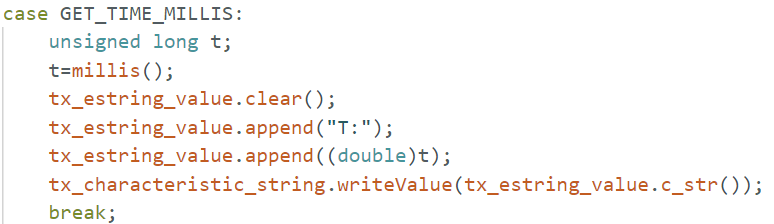
Figure 5: Arduino-side GET_TIME_MILLIS command handling and timestamp string formatting.
Evidence (Python/Jupyter)
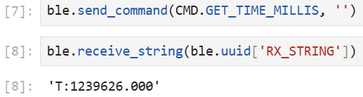
Figure 6: GET_TIME_MILLIS request sent from the PC and T:<millis> response received from Artemis.
Task 4 — Python notification handler (parse time from string)
Task: Set up a BLE notification handler in Python to receive the Artemis TX string characteristic.
Expected behavior: The callback decodes the incoming string and extracts the timestamp from messages formatted as T:<millis>.
Implementation (Python)
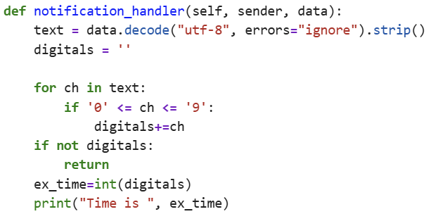
Figure 7: Python notification callback implementation for receiving and parsing T:<millis> strings.
Evidence (Python/Jupyter)
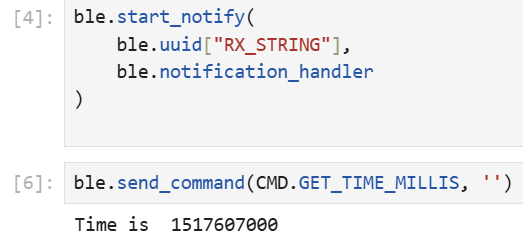
Figure 8: Notifications received from Artemis and timestamps successfully extracted in the callback.
Task 5 — Timestamp streaming & data rate
Task: Continuously send the current timestamp from the Artemis to the laptop using BLE
notifications and determine the effective data transfer rate.
Implementation
A non-blocking loop on the Artemis uses millis() to periodically send the current
timestamp as a BLE notification. On the laptop, a Python notification handler extracts the
timestamp and counts how many messages are received over a fixed time window.
Figure 10: Consecutive timestamps received on the laptop and calculated message rate.
Results and Analysis
Over approximately 5 seconds, 180 timestamp messages were received, corresponding to an average
rate of ~35 messages per second. Each message contains a timestamp string of about 8 bytes,
resulting in an effective data transfer rate of approximately 2 kbps.
Task 6 — Store timestamps in an array and send in batch
Task: Store timestamp data on the Artemis in a global array, then transmit the entire
dataset to the laptop using a dedicated BLE command.
Implementation
A global array is defined on the Artemis to store timestamp values generated using
millis(). During normal operation, the main loop periodically records timestamps
into this array instead of immediately sending them over BLE. An index variable is used to
track the current position in the array, and additional logic ensures the array is not overfilled.
Once the array is full, a new command (SEND_TIME_DATA) is used to iterate through
the stored timestamps and send each value as a string over a BLE notification. This allows
timestamp data to be transmitted in a batch rather than continuously.
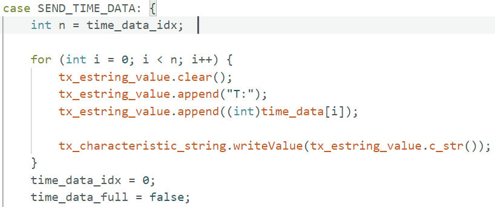
Figure 11: Arduino implementation showing a global timestamp array, controlled insertion logic,
and the SEND_TIME_DATA command used to transmit stored values.
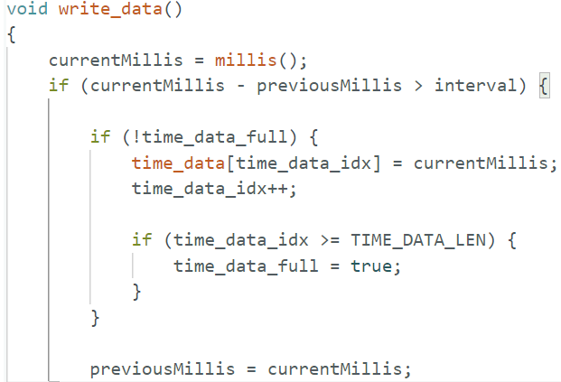
Figure 12: Python code sending the SEND_TIME_DATA command and storing received
timestamps in a list.
Results and Analysis
After issuing the SEND_TIME_DATA command, all stored timestamps were successfully
received on the laptop and appended to a Python list. The printed output shows that
76 timestamps were received, with the first and last values matching the expected order,
confirming that the entire array was transmitted correctly without data loss.
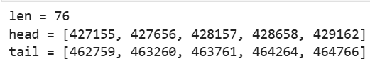
Figure 13: Output showing the total number of received timestamps along with the first and last
values, verifying correct batch transmission.
Task 7 — GET_TEMP_READINGS (paired timestamp + temperature arrays)
Task: Add a second array (same length as the timestamp array) to store temperature readings.
Each index i stores a corresponding pair: time_data[i] was recorded at the same
time as temp_data[i]. Implement GET_TEMP_READINGS to send paired values, and parse
them on the laptop into two Python lists.
Implementation
On the Artemis, two global arrays with the same size are used:
time_data[] stores timestamps and temp_data[] stores temperature readings.
When a sample is taken, the code writes time_data[idx] = millis() and
temp_data[idx] = <temperature> using the same index idx, ensuring that both arrays
remain aligned (i.e., element i in each array is a matched pair).
A new command GET_TEMP_READINGS loops through both arrays concurrently from
i = 0 to i = n-1 and sends each pair as a single formatted string:
D:<time>,<temp>. On the laptop, the notification handler checks the D: prefix,
splits the payload at the comma, and appends the parsed values into two lists
(time_list and temp_list).
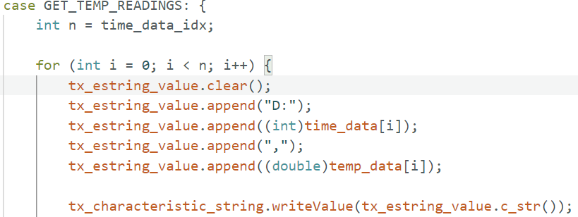
Figure 14: GET_TEMP_READINGS iterates through time_data[] and temp_data[]
using the same index and transmits paired values as D:<time>,<temp>.
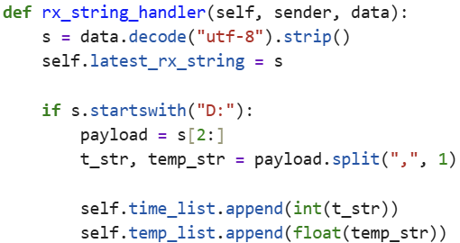
Figure 15: Notification handler parses strings with prefix D:, splits into timestamp and
temperature, and populates time_list and temp_list.
Results and Analysis
After sending GET_TEMP_READINGS, the laptop received matched timestamp–temperature pairs.
The output shows 67 entries in both time_list and temp_list, confirming that the
handler populated both lists consistently and that each timestamp corresponds to its temperature
reading at the same index.
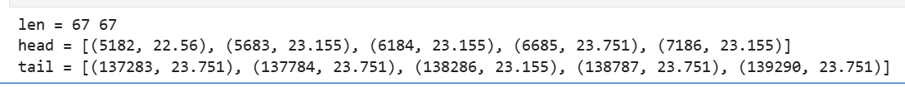
Figure 16: Verification output showing equal list lengths and sample head/tail pairs, demonstrating
correct parsing and alignment of timestamped temperature data.
Task 8 — Streaming vs. Batch Transmission
Methods compared
Streaming (Task 5): Each timestamp is sent immediately from the Artemis to the laptop using BLE notifications.
Batch transmission (Tasks 6 & 7): Data is first stored in global arrays on the Artemis and later sent in a loop using a dedicated command.
Streaming approach
Advantages: Immediate feedback and minimal onboard memory usage.
Disadvantages: Transmission rate is limited by BLE notification throughput.
Observed performance: Approximately 180 timestamps were received over 5 seconds, corresponding to about
35 messages per second, resulting in only a few kbps of effective data rate.
Batch transmission approach
Advantages: Data recording speed is independent of BLE bandwidth and is determined only by the sampling interval.
Disadvantages: Requires additional RAM to store data and delays feedback until transmission is triggered.
Observed behavior: All recorded samples were successfully received on the laptop
(e.g., 76 timestamps in Task 6 and 67 timestamp–temperature pairs in Task 7).
Recording speed comparison
The second method can record data significantly faster than the BLE streaming method because it is not constrained by
notification throughput. BLE bandwidth only becomes a limitation during the batch transfer phase.
Memory considerations
The Artemis board has 384 kB of RAM. Assuming 4 bytes per timestamp, approximately 98,000 timestamps could be stored.
When storing paired timestamp and temperature data (8 bytes per sample), this corresponds to roughly 49,000 samples.
In practice, usable capacity is slightly lower due to program variables and BLE buffers.
What I learned: BLE notification throughput is a practical bottleneck for real-time
streaming, while buffering data locally enables reliable high-rate recording.
Challenges: Achieving stable timing without blocking the main loop and correctly
handling asynchronous notifications on the Python side.
Solutions: Using millis()-based non-blocking loops and global arrays to
buffer data, followed by batch transmission with verification on the laptop.
5. 5000-level (Optional): Communication Performance Analysis
If you are doing the 5000-level tasks, include at least one plot and answer reliability at higher rates. :contentReference[oaicite:14]{index=14}
5.1 Effective Data Rate & Overhead (5B vs 120B replies)
TODO
Describe your experiment: PC sends request, Artemis replies fixed-size payloads; record send/receive times; compute data rate.
Reply sizes tested: TODO
Data rate results: TODO
Conclusion about overhead: TODO
Figure: TODO caption.
5.2 Reliability (high-rate notifications)
TODO
What happens when sending at a higher rate? Does the computer miss messages?
Explain how you tested and what you observed. :contentReference[oaicite:15]{index=15}
6. References
Fast Robots 2026 — Lab 1 Handout
ArduinoBLE documentation
Bleak documentation (Python BLE)
Last updated: TODO
Tip: Put your images under labs/images/ (same folder level as lab1.html) and link like:
<img src="images/your_plot.png">